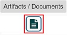
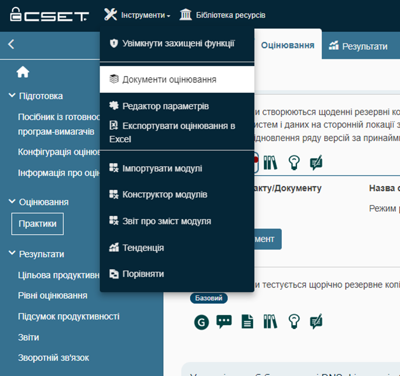

Активуючи дії по піктограмі "Деталі/Стандарт", відображається ідентифікатор відповідного запитання та його рівень.
|
Користувачі можуть звернутися за довідковою інформацією щодо роз'яснення суті запитання та визначення критеріїв для відповіді "Так". Така інформація відображається при активації користувачем дій по піктограмі "Суть запитання".
|
Активація дій по піктограмі "Коментарі" дозволяє експерту записувати неструктуровані коментарі до кожного питання під час оцінювання. На відміну від цього, при активації дій по піктограмі "Спостереження" користувач повинен заповнити в інтерактивній формі додаткові обов'язкові поля.
Наявність червоного індикатора Зауваження. Поле для вводу коментарів - це багаторядкове текстове поле. Існує можливість змінити розмір поля: наводячи курсор миші на (на рисунку позначено маркером), можна розширити або звузити розмір даного поля. Для відмови від вводу коментарів повторно активуйте дії по піктограмі "Коментарі".
|

Активуючи дії по піктограмі "Артефакт/Документи" eксперти можуть додати відповідні докази до кожного запитання під час оцінювання.
Додані документи відображаються у списку у блоці Прикріплені артефакти/документи.
Для прикріплення документу та/або артефакту натисніть на кнопку
Наявність червоного індикатора
Для видалення документу та/або артефакту активуйте дії по піктограмі "Видалити документ" - Для завантаження документу на локальний носій активуйте дії по піктограмі - Для зміни назви документу активуйте дії по наведеному на рисунку гіперпосиланню: Гіперпосилання для зміни назви документу
Змінено назву прикріпленого документу
|
 Зберігання вкладених документів
Зберігання вкладених документів
Доступ до прикріплених документів, артефактів і доказів можна отримати в меню Інструменти

У модальному вікні Документи оцінювання відображається перелік всіх доданих до оцінювання документів.
Для завантаження документу, який відображається у модальному вікні Документи оцінювання на локальний носій активуйте дії по піктограмі -
|
Активуючи дії по піктограмі "Спостереження", у CSET користувач отримує можливість додати свої спостереження щодо дотримання вимог кожного практичного запитання, для чого активуються дії по кнопці "Додати спостереження". У модальному вікні з відповідною формою користувачем вноситься інформація про деталі спостереження за дотриманням вимог кожного практичного запитання.
Для редагування опису спостереження активуйте дії по піктограмі "Редагувати" - Для видалення спостереження активуйте дії по піктограмі "Видалити" - Навність червоного індикатора
Модальне вікно Деталі спостереження Активуючи дії по піктограмі "Спостереження", у CSET відкривається модальне вікно з відповідною формою для запису користувачем результатів свого спостереження з дотриманням вимог відповідного запитання опитувальника відповідної практики RRA.
Записи спостережень надають інформацію про проблему, потенційний вплив проблеми, рекомендації щодо усунення проблеми та можливі вразливості, пов’язані з проблемою. В цьому вікні заповнюється значення наступних атрибутів: 1.Назва – текстове поле для опису загальної назви спостереження або зауваження. 2.Важливість – це випадаючий список елементів, які характеризують важливість цього спостереження або зауваження. Значення: Низький, Середній, Високий. 3.Дата рішення – текстове поле; вводиться дата, до якої вирішується проблема, у форматі: місяць/день/рік. 4.Проблема – текстове поле; надається детальне пояснення проблеми, пов'язаної з тим, чому на запитання чи вимогу було дано відповідь "Ні". 5.Впливи – текстове поле для опису потенційних чи спричинених наслідків, які проблема може спричинити або вже спричинила. 6.Рекомендації – текстове поле для опису рекомендацій з усунення недоліків, покращення стану кіберзахисту та кібербезпеки, описаних в спостереженні. 7.Вразливості – текстове поле для опису виявлених вразливостей, пов'язаних з проблемою. 8.Відповідальні особи – призначаються особи, відповідальні за вирішення проблем, визначених у записі спостереження. Контрольний список контактів міститиме список всіх поточних контактів, пов'язаних з оцінюванням. Відповідальних осіб може як взагалі не бути, так і більше однієї особи. 9.Очистити вибір – гіперпосилання, при активації дій по якому скидається вибір відповідальних осіб. 10.Блок Контакти – дозволяє додати наступні відомості про контактних осіб: •ім'я; •прізвище; •назва; •організація; •назва місця; •телефон; •робочий телефон; •адреса електронної пошти; •протокол екстренного зв'язку; •прапорець "Основна контактна точка"; •прапорець "Взяв участь у відвідуванні місця"; •перемикач "Роль" (Учасник або Фасілітатор). Для збереження натисніть на кнопку "Зберегти". Для відмови від збереження контакту - натисніть на кнопку "Скасувати". Після створення контакту відображаються кнопки "Змінити" (для внесення змін до контактної інформації) та "Видалити" (для видалення контакту).
|

Піктограма "Посилання". Активуючи дії по даній піктограмі, відображається вікно з переліком документації RRA у форматі *.pdf та/або здійснюється посилання на відповідний ресурс у мережі Інтернет.
Вибраний документ у форматі *.pdf відкриватиметься в окремому вікні.
Ці документи також можна знайти в Бібліотеці ресурсів CSET.
|
{kind=link}
{kind=link}
Користувачі можуть записувати відгуки під час оцінювання для того, щоб надіслати їх до CSET/DHS. Деякі приклади надісланих відгуків включають коментарі щодо теми запитання, структури запитання та того, як можна покращити запитання та макет.
Наявність червоного індикатора |
підготовлено у редакторі Help & Manual 9.3.0